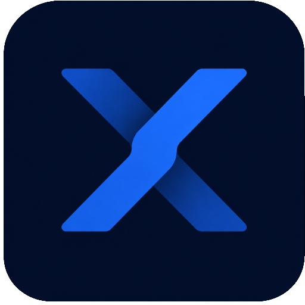

X-tockUna aplicación moderna para controlar el stock, registrar movimientos, gestionar productos y exportar el inventario de manera rápida y sencilla.
Descargar para WindowsActualmente la aplicación se encuentra en la versión 1.0.1.
Se ha actualizado el nombre de la aplicación a X-tock y se continúa trabajando en nuevas funcionalidades y mejoras.